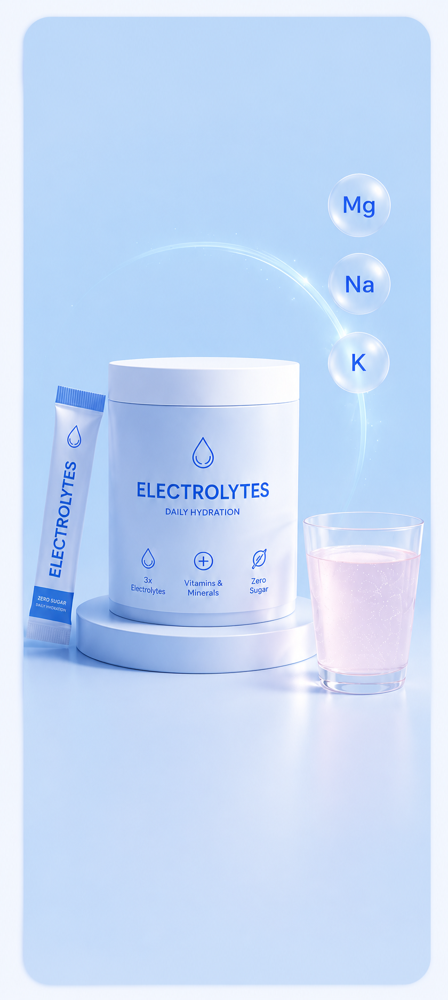
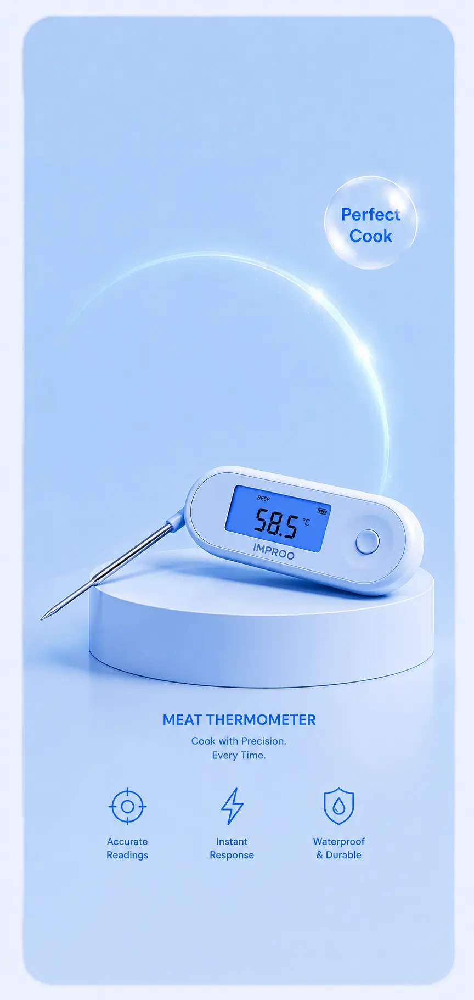

What is the carnivore diet?
The carnivore diet is an eating approach built entirely — or almost entirely — around animal foods. Meat, fish, eggs, animal fats, and sometimes dairy become the foundation of every meal, while plant foods are heavily restricted or removed completely.
At first glance, it sounds extreme. But after digging deeper into both the science and the real-world experiences of long-term followers, it becomes clear why the diet has exploded in popularity over the last few years.
Most people start carnivore for one of three reasons: weight loss, digestive or autoimmune issues, or simplicity and appetite control.
Unlike keto, where the goal is usually ketosis through low carbohydrates, carnivore goes one step further by eliminating nearly all plant-based foods entirely. That means no grains, no vegetables, no fruit, no legumes, and usually no sugar.
For some people, that level of restriction feels freeing. Fewer decisions, fewer cravings, fewer processed foods. Others find it socially difficult and unnecessarily limiting. The reality sits somewhere in the middle.
One reason many people report feeling better on carnivore may not be because meat is "magic" — but because they remove ultra-processed foods, liquid calories, excessive sugar, and highly palatable snack foods all at once. That alone can radically change energy intake, hunger levels, and blood sugar stability.
What happens in your body?
When carbohydrates disappear from the diet, insulin levels generally decrease and the body begins relying more heavily on fat for fuel. In many cases, carnivore naturally pushes people into ketosis — especially when meals are built around fatty cuts of meat.
Your body starts using dietary fat, stored body fat, and ketones produced by the liver as primary fuel sources instead of glucose. This metabolic shift can affect hunger hormones, water retention, energy levels, and even mental clarity.
One thing repeatedly observed in carnivore communities is how often people describe the same pattern: the first week feels rough, the second week feels stable, and hunger becomes dramatically more manageable afterward. That adaptation period matters.
During the early phase, many people experience fatigue, headaches, muscle cramps, irritability, and digestive changes — often called the "adaptation phase." Electrolytes become extremely important here, especially sodium and potassium.
Protein and fat together are incredibly filling. Many carnivore followers naturally end up eating fewer calories without intentionally restricting food — not because the diet is magic, but because satiety signals work more effectively.
Why do people try carnivore?
The carnivore diet is rarely just about eating steak. Most people arrive at it after years of trying different approaches that did not work long-term.
- Constant hunger on traditional diets
- Blood sugar instability and energy crashes
- Digestive discomfort after certain plant foods
- Simplicity and reduced food decision fatigue
- Weight loss plateaus after other approaches failed
- Autoimmune symptom management
- Late-night snacking
- Emotional eating triggers
- Ultra-processed convenience foods
- Hidden calories in sauces and drinks
- Variety-driven overeating
- Most social food temptation
The simplicity is a bigger factor than most people realise. When meals become "meat + eggs + water," a lot of modern eating habits disappear automatically. For some people, that structure creates consistency for the first time in years. For others, it becomes too restrictive to maintain socially or mentally.
What can you eat on carnivore?
The strict version of carnivore focuses entirely on animal-based foods. Some followers take a more flexible approach — including small amounts of dairy or coffee — while others go full zero-plant.
- Beef (all cuts)
- Lamb & pork
- Chicken & turkey
- Fish & seafood
- Eggs
- Butter & lard
- Salt
- Organ meats
- Hard cheeses
- Greek yogurt
- Heavy cream
- Coffee
- Sparkling water
- Bone broth
- All grains & bread
- Fruit & vegetables
- Sugar & sweeteners
- Seed oils
- Processed snacks
- Legumes & nuts
Carnivore is not a "plain chicken breast" diet. Without enough fat intake, energy levels crash quickly and hunger becomes harder to manage. Fatty cuts like ribeye, minced beef with higher fat percentages, salmon, eggs, and butter consistently work better than ultra-lean meals.
Benefits & drawbacks
- Reduced hunger and cravings
- Simpler meal planning
- Weight loss through improved satiety
- Better blood sugar stability for some
- Fewer ultra-processed foods consumed
- Many anecdotal digestive improvements
- Easier adherence for structure-seekers
- Extremely restrictive socially
- Harder to maintain long-term
- Lack of dietary variety
- Possible micronutrient gaps if poorly planned
- Digestive issues during adaptation
- Limited long-term research on carnivore specifically
- Higher saturated fat may concern some individuals
What does the science say?
Research specifically focused on the carnivore diet is still limited — that is important to say clearly. Most available evidence comes from low-carb and ketogenic diet research, observational surveys, and mechanistic studies around protein, satiety, and insulin response.
High-protein diets consistently show benefits for satiety and calorie control. Protein increases fullness significantly more than carbohydrates or fats alone, which may explain why many carnivore followers naturally eat less food overall without tracking anything.
Removing refined carbohydrates and sugar can improve blood glucose stability in some people, particularly those with insulin resistance. Some people report major improvements in bloating, skin conditions, inflammation, or autoimmune symptoms after removing plant foods — though controlled long-term studies are still lacking.
On cholesterol, the picture is less clear. Some carnivore followers see improved triglycerides and HDL levels. Others experience substantial rises in LDL. Anyone with cardiovascular risk factors should speak with a qualified healthcare professional before making major dietary changes.
Common mistakes people make
Low-fat carnivore often leads to poor energy, constant hunger, and difficulty sticking with the diet. Fatty cuts are not optional — they are the fuel source.
When carbohydrates drop, water and sodium loss increase significantly. Most adaptation symptoms — headaches, cramps, fatigue — are electrolyte problems, not meat problems.
The first week can feel rough. Judging the diet in week one is like judging a marathon by the first mile. Give the adaptation phase time before forming an opinion.
A carnivore diet built entirely on low-quality processed meat is very different from one focused on whole cuts, eggs, seafood, and nutrient-dense animal foods. Quality matters.
Not every uncomfortable feeling is the body "healing." Persistent issues beyond the first two weeks should be taken seriously, not explained away.
The short version
- The carnivore diet focuses almost entirely on animal foods — meat, fish, eggs, and animal fats.
- Most people use it for weight loss, appetite control, simplicity, or digestive reasons.
- Many followers naturally eat fewer calories because protein and fat are highly filling.
- The first adaptation phase can be difficult but often improves significantly within two weeks.
- Scientific evidence is promising in some areas but still limited overall — especially compared to keto research.
- It can work very well for certain individuals — but it is not automatically the best choice for everyone.
What we would actually recommend
If someone wants to try carnivore, a measured approach works better than going all-in blindly. The best diet is rarely the one that sounds most impressive online — it is the one you can realistically sustain.
Treat carnivore as a structured experiment. Track hunger, energy, digestion, cravings, sleep quality, and adherence. That information matters more than online opinions.
Focus on whole cuts, eggs, seafood, and fatty protein sources with consistent meal timing and proper hydration. A sustainable version beats a perfect version.
Sodium, potassium, and magnesium are all lost faster on low-carb eating. Salt your food generously, drink water consistently, and consider an electrolyte supplement during adaptation.
If your goal is identifying food sensitivities, add foods back one at a time after a baseline period. This is where carnivore delivers some of its most useful information.
Use the Improo weight and progress tracker to document your 14-day trial. Logging your energy, hunger, and weight daily gives you actual data to decide whether carnivore is working — instead of relying on how you feel on any one particular day. App available mid-2026.
What we'd actually buy
Two things matter more than anything else when starting carnivore: replacing lost electrolytes and cooking meat properly. These are the products we find genuinely useful — not the most expensive, not the most hyped.

Sodium, potassium, and magnesium in clean ratios — no sugar, no artificial sweeteners, no unnecessary fillers. Carnivore adaptation drains electrolytes fast, and Re-Lyte is built specifically for that. Comes in a 30-pack variety so you can find your favourite flavour without committing to one box.
REDMOND uses real salt from an ancient sea deposit in Utah — no synthetic ingredients. Re-Lyte is formulated for low-carb and zero-carb eaters with a higher sodium level than most generic electrolyte products. The variety pack makes it easy to stick with consistently, which matters more than the perfect formula on paper.

When your entire diet is meat, cooking it correctly matters. The Javelin reads in under 3 seconds and tells you exactly when your steak, roast, or salmon is at the right temperature — no guessing, no cutting it open to check.
The Javelin is one of the most respected budget thermometers on the market — ambidextrous design, magnetic back for fridge storage, and accurate enough for professional use. It costs less than a single ribeye yet gets used every single day on a carnivore diet. One of the best value purchases you can make in the kitchen.
References
-
1Leidy, H.J. et al. (2015). The role of protein in weight loss and maintenance. American Journal of Clinical Nutrition, 101(6), 1320S–1329S. PubMed: 25926512
-
2Westman, E.C. et al. (2008). The effect of a low-carbohydrate, ketogenic diet versus a low-glycemic index diet on glycemic control. Nutrition & Metabolism, 5(36). PubMed: 19099589
-
3Harvard T.H. Chan School of Public Health — The Nutrition Source. Protein. hsph.harvard.edu
-
4National Institutes of Health — MedlinePlus. Low-Carbohydrate Diet. medlineplus.gov
-
5Examine.com. Evidence-based breakdowns of nutrition science and dietary interventions. examine.com